|
Abstract
This note discusses the linear ideal magnetohydrodynamic (MHD) theory of tokamak plasmas. This note also serves as a document for the GTAW code (General Tokamak Alfvén Waves code), which is a Fortran code calculating Alfven eigenmodes in realistic tokamak geometries.
The time evolution of the fluid velocity is governed by the momentum equation
| 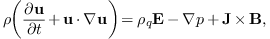 | (1) |
where , 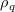, , , , and are mass density, charge density, thermal pressure, current density, electric field, and magnetic field, respectively. The time evolution of the mass density is governed by the mass continuity equation
| 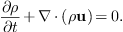 | (2) |
The time evolution equation for pressure is given by the equation of state
| 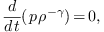 | (3) |
where 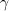 is the ratio of specific heats. The time evolution of is given by Faraday's law
| 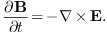 | (4) |
The current density can be considered as a derived quantity, which is defined through Ampere's law (the displacement current being neglected)
| 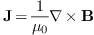 | (5) |
The electric field is considered to be a derived quantity, which is defined through Ohm's law
| 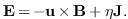 | (6) |
The charge density can be considered to be a derived quantity, which is defined through Poisson's equation,
| 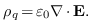 | (7) |
The above equations constitute a closed set of equations for the time evolution of four quantities, namely, , , , and (the electric field , current density , and charge density are eliminated by using Eqs. (5), (6), and (6)). In addition, there is an equation governing the spatial structure of the magnetic field, namely
| (8) |
In summary, the MHD equations can be categorized into three groups of equations, namely[1],
Evolution equations for base quantities , , , and :
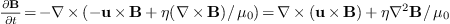
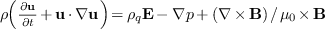
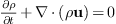,
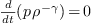,
Equation of constraint: .
Definitions: (i.e., they are considered to be derived quantities.)
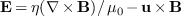,
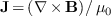,
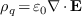.
The electrical field term 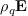 in the momentum equation (1) is usually neglected because this term is usually much smaller than other terms for low-frequency phenomena in tokamak plasmas (quasi-neutral approximation).
It is well known that the divergence of Faraday's law (4) is written
| 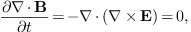 | (9) |
which implies that will hold in later time if it is satisfied at the initial time.
Because the displacement current is neglected in Ampere's law, the divergence of Ampere's law is written
| (10) |
On the other hand, the charge density is defined through Poisson's equation, Eq. (7), i.e.,
which indicates that the charge density is usually time dependent, i.e., 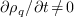. Therefore the charge conservation is not guaranteed in this framework. This inconsistency is obviously due to the fact that we neglect the displacement current 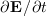 in Ampere's law. Since, for low frequency phenomena, the displacement current term is usually much smaller than the the conducting current , neglecting the displacement current term induces only small errors in calculating by using Eq. (5).
Referece [2] gives a clear derivation of the generalized Ohm's law, which takes the following form
 |
(12) |
where the first term on the right-hand side is called the “Hall term”, the second term is the electron pressure term, and the third term is called the “electron inertia term” since it is proportional to the mass of electrons.
Note that both and are the first-order moments, with being the weighted sum of the first-order moment of electrons and ions while being the difference between them. The generalized Ohm's law is actually the difference between the electrons and ions first-order moment equations. The generalized Ohm's law is an equation that governs the time evolution of . Also note that Ampere's law, with the displacement current retained, is an equation governing the time evolution of . However, in the approximation of the resistive MHD, the time derivative term is dropped in Ampere's law and and 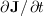 is dropped in Ohm's law. In this approximation, Ohm's law is directly solved to determine and Ampere's law is directly solved to determine .
The equation of state (3) involves three physical quantities, namely , , and . It turns out that the continuity equation can be used in the equation to eliminate . The equation of state
| 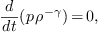 | (13) |
can be written as
| 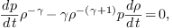 | (14) |
which simplifies to
| 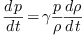 | (15) |
Expand the total derivative, giving
| 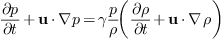 | (16) |
Using the mass continuity equation to eliminate in the above equation gives
| 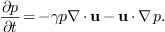 | (17) |
This equation governs the time evolution of the pressure. A way to memorize this equation is that, if 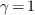, the equation will take the same form as a continuity equation, i.e.,
| 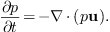 | (18) |
For the convenience of reference, the MHD equations discussed above are summarized here. The time evolution of the four quantities, namely , , , and , are governed respectively by the following four equations:
| 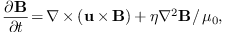 | (19) |
| 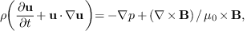 | (20) |
| 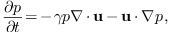 | (21) |
| 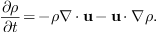 | (22) |
Note that only Eq. (19) involves the resistivity 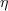. When 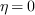, the above system is called ideal MHD equations.
Next, consider the linearized version of the ideal MHD equations. Use , 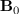, , and 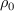 to denote the equilibrium fluid velocity, magnetic field, plasma pressure, and mass density, respectively. Use , 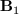, 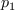, and 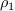 to denote the perturbed fluid velocity, magnetic field, plasma pressure, and mass density, respectively. Consider only the case that there is no equilibrium flow, i.e., 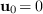. From Eq. (21), the linearized equation for the time evolution of the perturbed pressure is written
| 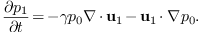 | (23) |
The linearized momentum equation is written
| 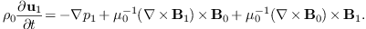 | (24) |
The linearized induction equation is written
| 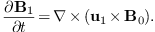 | (25) |
These three equations constitute a closed system for , , and . Note that the linearized equation for the perturbed mass density
| 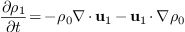 | (26) |
is not needed when solving the system of equations (23)-(25) because does not appear in equations (23)-(25).
In dealing with the linear case of MHD theory, it is convenient to introduce the plasma displacement vector , which is defined through the following equation
| 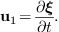 | (27) |
Using the definition of and the fact that the equilibrium quantities are independent of time, the linearized induction equation (25) is written
| 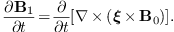 | (28) |
Similarly, the equation for the perturbed pressure [Eq. (23)] is written
| 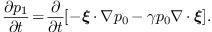 | (29) |
In terms of the displacement vector, the linearized momentum equation (24) is written
| 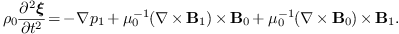 | (30) |
Equations (28), (29), and (30) constitute a closed system for , , and .
A general perturbation can be written
| 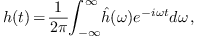 | (31) |
where the coefficient 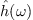 is given by the Fourier transformation of , i.e.,
| (32) |
Using the definition of the Fourier transformtion, it is ready to prove that
| (33) |
and
 |
(34) |
Performing Fourier transformation (in time) on both sides of the the linearized momentum equation (30) and noting that the equilibrium quantities are all independent of time, we obtain
| (35) |
where use has been made of the property in Eq. (34). Similarly, the Fourier transformation of the equations of state (29) is written
| (36) |
and the Fourier transformation of Faraday's law (28) is written
| (37) |
Equations (35)-(37) agree with Eqs. (12)-(14) in Cheng's paper[3]. They constitute a closed set of equations for , , and . In the next section, for notation ease, the hat on , , and will be omitted, with the understanding that they are the Fourier transformations of the corresponding quantities.
In dealing with eigenmodes, we ususally encounter discrete frequency perturbations, i.e., is periodic function of so that they contian only discrete frequency components. In this case, the inverse Fourier transformtion in Eq. (31) is replaced by the Fourier series, i.e.,
| (38) |
where the coefficients are given by
| (39) |
with and being the period of ( is larger enough so that is very small compared with frequency we are interested). The relation between and given by Eqs. (33) and (34) also applies to the relation between and , i.e.,
| (40) |
and
| (41) |
Using the transformtion given by Eq. (39) on Eqs. (28), (29), and (30), respectively, we obtain the same equation as Eqs. (35)-(37).
A general perturbation is given by Eq. (31), which is composed of infinit single-frequency perturbation of the form . It is obvious that a general perturbation can also be considered to be composed of single frequency perturbation of the form
 |
(42) |
In this case the range of is limited in . Because a physical quanty is always a real function, in the above should be a real function. It is ready to prove that the Fourier transformation of has the following symmetry in frequency domain:
| (43) |
Uisng this, the expression (42) is written
Writing , where and are real numbers, then the above expression is written as
Using expression (45), the Fourier transformation is written
| (46) |
If satisfies the eigenmode equations (35)-(37), then it is ready to verify that is also a solution to the equations. Then Eq. (43) implies that is also a slution to the equations. Therefore , i.e., , is a solution to the linear equations (28), (29), and (30). This tell us how to construct a real (physical) eigenmode from the complex funtion , i.e., the real part of is a physical eigenmode. Note that it is the real part of , instead of the real part of , that is a physical eigenmode.
Note that is a real number by the definition of Fourier transformation. However, strictly speaking, the above Fourier transformation should be replaced by Laplace transformation. In this case, is a complex number. In the following, we will assume that we are using Laplace transformation, instead of Fourier transformation. In the following section, we will prove that the eigenvalue of the ideal MHD system must be a real number.
Using Eqs. (36) and (37) to eliminate and from Eq. (35), we obtain
| (47) |
where , the linear force operator, is given by
| (48) |
It can be proved that the linear force operator is self-adjoint (or Hermitian) (I have never proven this), i.e., for any two general functions and that satisfy the same boundary condition, we have
| (49) |
As a consequence of the self-adjointness, the eigenvalue, , must be a real number. [Proof: Taking the complex conjugate of Eq. (47), we obtain
| (50) |
Note that the expression of given in Eq. (48) have the property , Using this, equation (50) is written
| (51) |
Taking the scalar product of both sides of the above equation with and integrating over the entire volume of the system, gives
| (52) |
Using the self-ajointness of , the above equation is written
| (53) |
| (54) |
| (55) |
Since is non-zero for any non-trivial
eigenfunction, it follows from Eq. (55) that  , i.e., must be a real number,
which implies that is either purely real or
purely imaginary.] It can also be proved that two eigenfunctions of the
Hermitian operator corresponding to different eigenvalues are orthogonal
to each other. [Proof:
, i.e., must be a real number,
which implies that is either purely real or
purely imaginary.] It can also be proved that two eigenfunctions of the
Hermitian operator corresponding to different eigenvalues are orthogonal
to each other. [Proof:
| (56) |
| (57) |
Taking the scalar product of both sides of Eq. (56) with and integrating over the entire volume of the system, gives
| (58) |
Taking the scalar product of both sides of Eq. (57) with and integrating over the entire volume of the system, gives
| (59) |
Combining the above two equations, we obtain
Using the self-ajointness of , we know the right-hand side of Eq. (59) is zero. Thus Eq. (59) is written
| (61) |
Using , the above equation is written
| (62) |
Since we assume , the above equation reduces to
| (63) |
i.e., and are orthogonal to each other.]
Next, we consider the form of the linearized MHD equations in toroidal devices (e.g. tokamak). In these devices, there exist magnetic surfaces. The motion of plasma along the surface and perpendicular to the surface are very different. Thus, it is useful to decompose the perturbed quantities into components lying on the surface and perpendicular to the surface. Following Ref. [3, 4], we write the displacement vector and perturbed magnetic field as
| (64) |
and
| (65) |
where  is the poloidal magnetic flux function
appearing in the GS equation (). (In deriving the
eigenmode equation, we do not need the specific definition of . What we need is only that
is the poloidal magnetic flux function
appearing in the GS equation (). (In deriving the
eigenmode equation, we do not need the specific definition of . What we need is only that  is a
vector in the direction of and thus is perpendicular to both and ). Taking scalar product of the above two equations
with , , and , respectively, we obtain
is a
vector in the direction of and thus is perpendicular to both and ). Taking scalar product of the above two equations
with , , and , respectively, we obtain
| (66) |
| (67) |
Next, we derive the component equations for the induction equation (37) and momentum equation (35). The derivation is straightforward but tedious. Those who are not interested in these details can skip them and read directly Sec. 3.7 for the final form of the component equations.
component of
induction equationThe induction equation is given by Eq. (37), i.e.,
| (68) |
Next, consider the component of the above
equation. Taking scalar product of the above equation with , we obtain
| (69) |
| (70) |
| (71) |
| (72) |
| (73) |
| (74) |
| (75) |
| (76) |
| (77) |
| (78) |
Excluding terms, the terms on the right hand side (r.h.s) of the above equation can be written
Using , we obtain
The r.h.s of the above equation is exactly the term appearing on the right-hand side of Eq. (79). Thus we obtain
| (82) |
which agrees with Eq. (20) in Cheng's paper[3].
The component of the induction equation is given by
| (83) |
which can be further written as
where
| (85) |
is the negative local magnetic shear. Using , equation (84) is written as
| (86) |
| (87) |
Eq. (87) agrees with Eq. (21) in Cheng's paper[3].
The component of the induction equation in the direction of is written as
| (88) |
| (89) |
The term on right-hand side of the above equation is written as
Using this, the right-hand side of Eq. (89) is written as
Before we try to simplify the above equation, we derive the expression for the divergence of , which is written as
It can be proved that the fourth term of the above equation can be written as (refer to (9.8) for the proof)
Then Eq. (93) is written as
| (95) |
Eq. (95) agrees with Eq. (23) in Cheng's paper, but a factor is missed in the fourth term of Cheng's equation[3]. Using Eq. (95), Eq. (92) is written as
| (96) |
It can be proved that
| (97) |
(Refer to Sec. 9.10 for the proof.) Then Eq. (96) is written as
| (98) |
and the component of the induction equation in the direction of [Eq. (89)] is finally written as
| (99) |
Eq. (99) agrees with Eq. (22) in Cheng's paper[3].
The three components of the linearized momentum equation can be obtained
by taking scalar product of Eq. (35) with ,
, and , respectively. We
first consider the component of the momentum
equation, which is written as
| (100) |
i.e.,
| (101) |
The last term on the right-hand side of Eq. (101) can be written as
where . Using Eq. (82), i.e.,  , the above equation is written as
, the above equation is written as
| (103) |
Substituting Eq. (103) into Eq. (101) gives
| (104) |
Using in the above equation gives
| (105) |
which agrees with Eq. (19) in Cheng's paper[3].
component of
momentum equation
Next we consider the radial component of the momentum equation. Taking
scalar product of the momentum equation with , we
obtain
 |
(106) |
After some algebra (the details are given in Sec. (9.5)), Eq. (106) is written
where
| (108) |
and is the magnetic field curvature with the unit vector along equilibrium magnetic field. Equation (107) agrees with Eq. (17) in Cheng's paper[3]. In passing, let us examine the physical meaning of defined by (108). In linear approximation, we have
This indicates the perturbation in the square of the magnetic strength is . Therefore, the perturbation in magnetic pressure is written
| (110) |
which indicate defined by Eq. (108) is the total perturbation in the thermal and magnetic pressure.
The component of the linearized momentum equation is written
 |
(111) |
The last term of Eq. (111) is written
Using Eq. (337), i.e.,
| (113) |
the second last term on the right-hand side of Eq. (111) is written
The term in the above equation is written as
Gathering terms involving , excluding the first term, in expression (115) gives
which can be proved to be zero (refer to Sec. 9.6 for the proof). Gathering terms involving in expression (115) gives
It can be proved that the second term of the above expression is equal to (refer to Sec. 9.9 for details). Thus, from Eq. (114), we obtain
| (117) |
Using Eqs. (112) and (117) in Eq. (111) yields
| (118) |
Using  , the above equation can be arranged as
, the above equation can be arranged as
| (119) |
which agrees with Eq. (18) in Cheng's paper[3].
For the ease of reference, Eqs. (29), (82), (87), (99), (105), (76), and (119) are repeated here:
| (120) |
| (121) |
| (122) |
| (123) |
| (125) |
| (126) |
where , , , which is usually called the geodesic curvature, , which is usually called the normal curvature.
 as variables
as variablesUsing Eqs. (121) and (122) to eliminate , , Eqs. (124) and (125) are written, respectively, as
and
Following Ref. [3], we will express the final eigenmodes equations in terms of the following four variables: , , , and . In order to achieve this, we need to eliminate unwanted variables. Since we will use instead of as one of the variables. we write the equation (120) for the perturbed pressure in terms of variable, which gives
| (129) |
Using (129) to eliminate in Eq. (128), we obtain
Using pressure equation (120) to eliminate in Eq. (126), we obtain
| (131) |
which can be used in Eq. (123) to eliminate , yielding
| (132) |
Using Eq. (132) to eliminate in Eq. (129), we obtain
| (133) |
Equations (130) and (133), which involves only surface derivative operators, can be put in the following matrix form:
| (134) |
with the matrix elements given by
| (135) |
| (136) |
| (137) |
| (138) |
| (139) |
| (140) |
| (141) |
| (142) |
Equations (134)-(142) agree with equations (25), (28), and (29) of Ref [3].
Using Eq. (129) to eliminate in Eq. (127), we obtain

The equation for the divergence of [Eq. (95)] is written
| (144) |
Equations (143) and (144) can be put in the following matrix form
| (145) |
with the matrix elements given by
| (146) |
| (147) |
| (148) |
| (149) |
| (150) |
| (151) |
| (152) |
| (153) |
Equations (146)-(153) agree with Equations (26) and (27) in Ref.[3]. (It took me several months to manage to put the equations in the matrix form given here.)
Denote the strength of the equilibrium magnetic field at the magnetic axis by , the mass density at the magnetic axis by , and the major radius of the magnetic axis by . Define a characteristic speed , which is the Alfvén speed at the magnetic axis. Using the Alfvén speed, we define a characteristic frequency . Multiplying the matrix equation (134) by gives
| (154) |
with new quantities defined as follows: , , , , , , and . Using the equations (135), (136), (140), (137), (138), and (142), the expression of ,, , ,, and are written respectively as
| (155) |
| (156) |
 |
(157) |
| (158) |
| (159) |
| (160) |
where , , . Next, consider re-normalizing the matrix equation (145). Multiply the first equation of matrix equation (145) by , giving
| (161) |
with the new matrix elements defined as follows: , , and . (Note that, although the second equation of matrix equation (161) uses , instead of , as a variable , it is actually identical with the second equation of matrix equation (145) because the term is multiplied by zero.) Using Eqs. (147), (148) (149) , we obtain
| (162) |
| (163) |
| (164) |
Note that, after the normalization, all the coefficients of the resulting equations are of the order , thus, are suitable for accurate numerical calculation. Also note that, for typical tokamak plasmas, the normalization factor is of the order , which is six order away from . Therefore the normalization performed here is necessary for accurate numerical calculation. [If the normalizing factor is two (or less) order from , then, from my experience, it is usually not necessary to perform additional normalization for the purpose of optimizing the numerical accuracy, i.e., the original units system has provided a reasonable normalization. Of course, suitable re-normalization will be of benefit to developing a clear physical insight into the problem in question.]
In the above, we do not specify which coordinate system to use. In this article, we will use the straight-line magnetic surface coordinate system (i.e. flux coordinate system) . The details of this coordinate system are given in my notes on tokamak equilibrium (/home/yj/theory/tokamak_equilibrium/tokamak_equilibrium.tm).
Any axisymetrical magnetic field consistent with the equilibrium equation can be written in the form
where . In the straight-line magnetic surface coordinates system , the contra-variant form of the equilibrium magnetic field is expressed as
 |
(165) |
where . The covariant form of the equilibrium magnetic field is given by
| (166) |
where is the Jacobian of coordinate system.
The form of the radial differential operator in coordinates is given by
| (167) |
(Refer to my notes “tokamak_equilibrium.tm” for the proof.)
The MHD eigenmode equations (154) and (161) involve two surface operators, and (they are called surface operators because they involve only differential on magnetic surfaces). Next, we provide the form of the two operators in flux coordinate system . Using Eq. (165), the operator (usually called magnetic differential operator) is written
| (168) |
Using the covariant form of the equilibrium magnetic field [Eq. (166)], the operator is written
| (169) |
A perturbation must be a periodic function of the poloidal angle and toroidal angle , and thus can be expanded as the following two-dimensional Fourier series,
| (170) |
where the expansion coefficient is given by
| (171) |
Our next task is to derive the equations for the coefficients .
Next, consider the calculation of the surface operators acting on the above perturbation. Using Eqs. (168) and (170), we obtain
where is a known function that is independent of . Similarly, we have
Using Eq. (169), we obtain
The elements of matrix , , , and are two dimensional differential operators about , which can be called surface differential operators. As discussed above, we use Fourier expansion to treat the differential with respect to and . In this method, we need to take inner product between different Fourier harmonics (this is the standard spectrum method, instead of the pseudo-spectral method). Noting this, we recognize that it is useful to define the following inner product operator:
where is a surface differential operator of the following form
| (175) |
Because both of the coefficients in expression (175) are independent of , it is ready to see that, for , . This indicates that with different are decoupled with each other.
For notation ease, is denoted by when , i.e.,
[For the special case that is an algebra operator , equation (175) can be reduced to
| (176) |
where is independent of because, as we will see below, is determined by equilibrium quantities (for example, ), which is axisymetrical. Expression (176) is a Fourier integration over the interval , which can be efficiently calculated by using the FFT algorithm (details are given in Chapter 13.9 of Ref. [5]).] After using the Fourier harmonics expansion and taking the inner product, every element of the matrices , and becomes a matrix, where is the total number of the Fourier harmonics included in the expansion. Taking the matrix as an example, it is discretized as
| (177) |
where , ,  ,
. Next, let us derive the expressions of , , ,
. The goal of the derivation is to perform the
surface differential operators so that all the inner products take the
form of the Fourier integration given by Eq. (176). For the
convenience of reference, the expression of matrix
is repeated here:
,
. Next, let us derive the expressions of , , ,
. The goal of the derivation is to perform the
surface differential operators so that all the inner products take the
form of the Fourier integration given by Eq. (176). For the
convenience of reference, the expression of matrix
is repeated here:
Then is written as
Making use of Eq. (173), equation (178) is written as
| (179) |
Note that all the operators within the inner operator of the above equation are algebra operators. Therefore the calculation of the inner product reduces to the calculation of the Fourier integration (176), which can be efficiently calculated by using the FFT algorithm (it is thus implemented in GTAW code). Similarly, the discrete form of the other matrix elements are written respectively as:
Next, consider the discrete form of the normalized matrix, which is given by
 |
(183) |
Using Eqs. (139) and (159), we obtain
| (186) |
| (187) |
Next, we derive the discrete form of matrix and . Before doing this, we examine matrix equation (161), which can be written as
| (188) |
Using the expression of the operator , i.e.,
| (189) |
equation (188) is written as
| (190) |
Define the first matrix on the r.h.s of the above equation as , then , and and are given by
| (191) |
Then
| (192) |
| (193) |
| (194) |
The formula for calculating the right-hand side of Eq. (194) is given in Sec. 8.6.

| (196) |
In the GTAW code, the weight functions appearing in the Fourier integration are numbered as follows:
| (199) |
| (200) |
| (201) |
| (202) |
| (203) |
| (204) |
| (205) |
| (206) |
| (207) |
| (208) |
| (209) |
 |
(210) |
| (211) |
The formulas for calculating the equilibrium quantities, such as the geodesic curvature , normal curvature , and the local magnetic shear , are given in Sec. 8.4.
In the GTAW code, the matrix elements and are multiplied by (check whether this will make a root of ?). After this, the matrix elements can be written in the following form
| (212) |
where and are matrix which are both independent of .
The continua are determined by the condition that , which is the condition that the matrix equation has nonzero solutions. Using Eq. (212), the matrix equation can be written
| (213) |
Thus finding that can make have nonzero solution reduces to finding the eigenvalues of the generalized eigenvalue problem in Eq. (213). In GTAW code, the generalized eigenvalue problem in Eq. (213) is solved numerically by using the zggev subroutine in Lapack library. The numerical results of the continuous spectrum are given in Sec. 8.2.
Before we give the numerical solution for the continuous spectrum, we consider some approximations that can be made when solving continuous spectrum.
Examining the expression (138) for matrix element , we find that the first term of can be written as
| (214) |
where , while the second term of can be written as
where is the parallel wave vector and we have used the approximation . Using Eqs. (214) and (215), the ratio of the second term to the first term of is written as . For low () equilibrium, the ratio is small and therefore the second term of can be dropped. This approximation is called the slow sound approximation in the literature[6, 7]. Numerical results indicate this approximation will remove all the sound continua while keeping the Alfven continua nearly unchanged.
If we set all the thermal pressure terms in and to be zero (this is equivalent with setting ), the sound wave will be removed from the system. This approximation is called zero beta limit in literature[6]. Numerical results indicate the zero beta limit will remove all the sound continua. Compared with the slow sound approximation, the zero beta limit will make the frequency of the Alfven continua a little lower, and make the zeroth continua gaps (BAE gaps) disappear[7].
Consider the form of matrix in the cylindrical geometry limit, in which the equilibrium quantities are independent of poloidal angle. Equation (284) indicates that the geodesic curvature is zero in this case. Thus, the matrix elements and are zero. Next, consider the matrix elements and . Because all equilibrium quantities are independent of the poloidal angle, different poloidal harmonics of the perturbation are decoupled. Therefore, we can consider a perturbation with a single poloidal mode number . For a poloidal harmonic with poloidal mode number , matrix element is written

and matrix element is written
The continua are the roots of the equation , which, in the cylindrical geometry limit, reduces to
| (218) |
Two branches of the roots of Eq. (218) are given by and , respectively. The equation is written
| (219) |
which gives
| (220) |
which is the Alfvén branch of the continua. Figure 1a plots the results of Eq. (220). The equation is written
| (221) |
which is the sound branch of the continua. Figure 1b plots the results of Eq. (221).
Figure 1.
Alfven continua (left) and sound continua (right) in the
cylindrical geometry limit for , and (calculated by using Eqs. (220)
and (221)). The equilibrium used for this calculation
is for EAST discharge #38300@3.9s (G-eqdsk filename g038300.03900,
which was provided by Dr. Guoqiang Li). The number density of ions
is given in Fig. 12. Because the Jacobian in toroidal geometry depends on the poloidal angle,
the average value of on a magnetic surface
is used in evaluating the right-hand side of (220).
|
Figures 2 compares the Alfven continua in the cylindrical limit with those in the toroidal geometry. The results indicate that the Alfven continua in the toroidal geometry reconnect, forming gaps near the locations where the Alfven continua in the cylindrical limit intersect each other.
The result in Eq. (220) is not clear from the physical point of view since it involves the Jacobian, which is a mathematical factor due to the freedom in the choice of coordinates. Next, we try to write the right-hand side of Eq. (220) in more physical form. In cylindrical geometry limit, magnetic surfaces are circular. Thus the radial coordinate can be chosen to be the geometrical radius of the circular magnetic surface, and the usual poloidal angle (i.e., equal-arc angle) can be used as the poloidal coordinate. Then the poloidal magnetic flux is written as
| (222) |
where is the length of the cylinder. We know
that used in the Grad-Shafranov equation is
related to  by
by
| (223) |
Using Eqs. (222) and (223), we obtain
| (224) |
Next, we calculate the Jacobian , which is defined by
| (225) |
Since we choose and (the positive direction of is count clockwise when observers view along the positive direction of ), the above equation is written
Using Eqs. (224) and (226) , is written
| (227) |
Using these, Eq. (220) is written
| (228) |
Using the definition of safety factor in the cylindrical geometry
| (229) |
equation (228) is written
| (230) |
In the cylindrical geometry, the parallel (to equilibrium magnetic field) wave-number is given by
| (231) |
Using this, Eq. (230) is written
 |
(232) |
Using the definition of Alfven speed , the above equation is written as
| (233) |
which gives the well known Alfven resonance condition. For later use, define
| (234) |
then Eq. (228) is written as .
Similarly, by using Eq. (227), equation (217) for is written as
Then equation reduces to
| (235) |
| (236) |
where , . Equation (166) gives the sound branch of the continua. For present tokamak plasma parameters, is usually one order smaller than . Thus, equation (236) indicates the sound continua are much smaller than the Alfven continua for the same and .
In the cylindrical geometry, continua with different poloidal mode numbers will intersect each other, as shown in Fig. 1. Next, we calculate the radial location of the intersecting point of two continua with poloidal mode number and , respectively. In the intersecting point, we have
| (237) |
i.e.
| (238) |
which gives
| (239) |
or
| (240) |
Inspecting the expression for in Eq. (323), i.e.,
we know that only the case in Eq. (240) is possible, which gives
| (241) |
which further reduces to
| (242) |
The above equation determines the radial location where the continuum intersect the continuum. Note that a mode with two poloidal modes has two corresponding resonant surfaces. For the case where the mode has and poloidal harmonics, the resonant surfaces are respectively and . Note that the value of given in Eq. (242) is between the above two values.
In toroidal geometry, the different poloidal modes are coupled, and the continuum will “reconnect” to form a gap in the vicinity of the original intersecting point, as shown in Fig. 2. Therefore the original intersecting point, Eq. (242), gives the approximate location of the gap. Furthermore, using Eq. (242), we can determine the frequency of the intersecting point, which is given by
| (243) |
which can be further written
| (244) |
According to the same reasoning given in the above, Eq. (244) is an approximation to the center frequency of the TAE gap. The frequency and the location given above are also an approximation to the frequency and location of the TAE modes that lie in the gap.
For the ellipticity-induced gap (EAE gap), which is formed due to the coupling of and harmonics, the location is approximately determined by
| (245) |
which gives
| (246) |
and the approximate center angular frequency is
| (247) |
which can be written as
Generally, for the gap formed due to the coupling of and harmonics, we have
which gives
| (248) |
and
| (249) |
Equation (249) can also be written as
 |
(250) |
After using Fourier spectrum expansion and taking the inner product over , Eq. (190) can be written as the following system of ordinary differential equations:
| (251) |
where is the total number of the poloidal harmonics included in the Fourier expansion, the matrix elements are functions of and . Next, we specify the boundary condition for the system. Note that equations system (251) has first-order differential equations, for which we need to specify boundary conditions to make the solution unique. The geometry determines that the radial displacement at the magnetic axis must be zero, i.e.,
| (252) |
We consider only the modes that vanish at the plasma boundary, for which we have the following boundary conditions:
| (253) |
Now Eqs. (252) and (253) provide boundary conditions, half of which are at the boundary and half are at the boundary . Therefore equations system (251) along with the boundary conditions Eqs. (252) and (253) constitutes a standard two-points boundary problem[5]. Note, however, that we are solving a eigenvalue problem, for which there is an additional equation for :
| (254) |
This increases the number of equations by one and so we need one
additional boundary condition. Note that, by eliminating all  , equations system (251) can be written as a
system of second-order differential equations for .
Further note that the unknown functions satisfy
homogeneous equations and homogeneous boundary conditions, which
indicates that if with
are solutions, then are also solutions to the
original equations, where is a constant.
Therefore the value of the derivative of at the
boundary have one degree of freedom. Due to this fact, one of the
derivatives ,
, equations system (251) can be written as a
system of second-order differential equations for .
Further note that the unknown functions satisfy
homogeneous equations and homogeneous boundary conditions, which
indicates that if with
are solutions, then are also solutions to the
original equations, where is a constant.
Therefore the value of the derivative of at the
boundary have one degree of freedom. Due to this fact, one of the
derivatives ,  ,…,
at can be set to be a
nonzero value. For example, setting the value of
at to be and making use
of at , we obtain
,…,
at can be set to be a
nonzero value. For example, setting the value of
at to be and making use
of at , we obtain
| (255) |
which can be solved to give
| (256) |
which provides the additional boundary condition we need. In the present version of my code, for convenience, I directly set the value of to a small value, instead of using Eq. (256). The following sketch map describes the function for which we need to find roots in the shooting process.
| (257) |
To benchmark GTAW code, we use it to calculate the continua and gap modes of the Solovev equilibrium and compare the results with those given by NOVA code. The Solovev equilibrium used in the benchmark case is given by
| (258) |
| (259) |
with , , , , and . The flux surface with the minor radius being (corresponding to ) is chosen as the boundary flux surface. Main plasma is taken to be Deuterium and the number density is taken to be uniform with . Figure 3 compares the Alfven continua calculated by NOVA and GTAW, which shows good agreement between them.
|
Figure 3. Comparison of the Alfven continua calculated by NOVA and our code. The
continua are calculated in the slow sound approximation[7]
and the equilibrium used is the Solovev equilibrium given in Eqs.
(258) and (259).
|
A gap mode with frequency is found in the NAE gap by both NOVA and GTAW. The poloidal mode numbers of the two dominant harmonics are and , which is consistent with the fact that a NAE is formed due to the coupling between and harmonics. Before comparing the radial structure of the poloidal harmonics given by the two codes, a discussion about the assumption adopted in NOVA is desirable. As is pointed out by Dr. Gorelenkov, NOVA at present is restricted to up-down symmetric equilibrium and, for this case, it can be shown that the amplitude of all the radial displacement can be transformed to real numbers. For this reason, NOVA use directly real numbers for the radial displacement in its calculation. In GTAW code, the amplitude of the poloidal harmonics of the radial displacement are complex numbers. The Solovev equilibrium used here is up-down symmetric and the results given by GTAW indicate the poloidal harmonics of the radial displacement can be transformed (by multiplying a constant such as ) to real numbers. After transforming the radial displacement to real numbers, the results can be compared with those of NOVA. Figure 4 compares the radial structure of the dominant poloidal harmonics given by the two codes, which indicates the results given by the two codes agree with each other well.
|
Figure 4. The dominant poloidal
harmonics () of a
NAE as a function of the radial coordinate. The solid lines are
the results of GTAW while the dashed lines are those of NOVA. The
corresponding poloidal mode numbers are indicated in the figure.
The frequency of the mode . The equilibrium
is given by Eqs. (258) and (259).
|
|
Figure 5. Slow sound approximation of the continua of the Solovev equilibrium given by
Eqs. (258) and (259). Also plotted are
the frequency of the NAE () and the and continua in
cylindrical limit.
|
Figure 6 plots the mode structure of the NAE on plane, which shows that the mode has an anti-ballooning structure, i.e., the mode is stronger at the high-field side than at the low-field side.
|
Figure 6. Two dimension mode
structure of the NAE in Fig. 4. The dashed line in
the figure indicates the boundary magnetic surface and the small
circle indicates the inner boundary used in the numerical
calculation.
|
|
Figure 7. Real part (a), imaginary part (b), and
absolute value of the amplitude (c) of the poloidal harmonics of a
TAE as a function of the radial
coordinate. The frequency of the mode is .
The dominant poloidal harmonics are those with
and . The equilibrium is given by Eqs. (258) and (259).
|
|
Figure 8. Slow sound approximation of the
continua of the Solovev equilibrium. Also plotted are the
frequency of the TAE () and the and continua in cylindrical
limit. Toroidal mode number .
|
For the case that , a TAE with is found in the TAE gap. The radial dependence of the poloidal harmonics of the mode is plotted in Fig. 9. Figure 10 plots the frequency of the mode on the Alfven continua graphic.
|
Figure 9. Real part (a), imaginary
part (b), and absolute value of the amplitude (c) of the poloidal
harmonics of a TAE as a function of the
radial coordinate. The frequency of the mode is .
The dominant poloidal harmonics are those with
and . The equilibrium is given by Eqs. (258) and (259), (old)
|
|
Figure 10. Slow sound approximation
of the continua of the Solovev equilibrium. Also plotted are the
frequency of the TAE () and the and continua in cylindrical
limit. Toroidal mode number .(old)
|
The content in this section has been published in my 2014 paper[8].
The tokamak equilibrium used in this paper is reconstructed by EFIT code by using the information of profiles measured in EAST experiment[9]. The shape of flux surfaces within the last-closed-flux surface (LCFS) are plotted in Fig. 11, where curves are also plotted. In the paper, I said that the equilibrium was a double-null configuration with the LCFS connected to the lower X point. This is wrong. The configuration with the LCFS connected to the lower X point should be called lower single null configuration. The double-null configuration is a configuration with LCFS connected to both the lower and upper X points. In practice, if the spacial seperation between the flux surface connected to the low X point and the flux surface connected to the upper X point, , is smaller than a value (e.g. 1cm), the configuration can be considered as a double null configuration, where is the spacial separation between the two flux surfaces on the low-field side of the midplane.
The profiles of safety factor, pressure, and electron number density are plotted in Fig. 12.
The mass density is calculated from , where is the mass of the main ions (deuterium ions in this discharge), is the number density of the ions, which is inferred from by using the neutral condition (impurity ions are neglected).
Figure 13. Normal and geodesic magnetic
curvature as a function of the poloidal angle. Different lines in
the figure correspond to different magnetic surfaces.
|
Figure 14. Negative local magnetic
shear as a function of the poloidal angle.
The different lines correspond to different magnetic surfaces. The
equilibrium is for EAST shot #38300 at 3.9s.
|
Figure 15. as a function
of the poloidal angle. The different lines correspond to the
values of on different magnetic surfaces
|
The eigenfrequency of Eq. (213), , as a function of the radial coordinate gives the continua for the equilibrium. It can be proved analytically that the eigenfrequency of Eq. (213), , is a real number (I do not prove this). Making use of this fact, we know that a crude method of finding the eigenvalue of Eq. (213) is to find the zero points of the real part of the determinant of . Since, in this case, both the independent variables and the value of the function are real, the zero points can be found by using a simple one-dimension root finder. This method was adopted in the older version of GTAW (bisection method is used to find roots). In the latest version of GTAW, as mentioned above, the generalized eigenvalue problem in Eq. (213) is solved numerically by using the zggev subroutine in Lapack library. (The eigenvalue problem is solved without the assumption that is real number. The eigenvalue obtained from the routine is very close to a real number, which is consistent with the analytical conclusion that the eigenvalue must be a real number.)
Figure 16 plots the eigenfrequency of Eq. (213) as a function of the radial coordinate . The result is calculated in the slow sound approximation, thus giving only the Alfven branch of the continua. Also plotted in Fig. 16 are the Alfven continua in the cylindrical limit. As shown in Fig. 16, the Alfven continua in toroidal geometry do not intersect each other, thus forming gaps at the locations where the cylindrical Alfven continua intersect each other.
The first gap, which is formed due to the coupling of sound wave and Alfven wave, starts from zero frequency. This gap is called BAE gap since beta-induced Alfven eigenmode (BAE) can exist in this gap. The second gap is called TAE gap, which is formed mainly due to the coupling of and poloidal harmonics. The third gap is called EAE gap, which is formed mainly due to the coupling of and poloidal harmonics. The fourth gap is called NAE gap, which is formed due to the coupling of and poloidal harmonics. A gap can be further divided into sub-gaps according to the two dominant poloidal harmonics that are involved in forming the gap. For example, a sub-gap of the TAE gap is the one that is formed mainly due to the coupling of and harmonics. For the ease of discussion, we call this sub-gap “ sub-gap”, where the two numbers stand for the poloidal mode numbers. The frequency range of a sub-gap is defined by the frequency difference of the two extreme points on the continua. The radial range of the sub-gap can be defined as the radial region whose center is the location of one of the extreme points on the continua, width is the half width between the neighbor left and right extreme points.
 |
Figure 16.
Alfven continua in toroidal geometry (red dots)(calculated in slow
sound approximation) and in cylindrical geometry limit for , and (calculated by
using Eq. (220)). The equilibrium used for this
calculation is for EAST shot #38300 at 3.9s (G-eqdsk filename
g038300.03900, which was provided by Dr. Guoqiang Li). (main ions
are deuterium, impurity ions are assumed to be absent).
|
Figure 17 compares the continua of the full ideal MHD model with those of slow sound and zero approximations. The results indicate that the slow sound approximation eliminates the sound continua while keeps the Alfven continua almost unchanged. The zero approximation eliminates the BAE gap.
(Numerical results indicate that the eigenvalue is always grater than or equal to zero. Can this point be proved analytically?)
In order to verify the numerical convergence about the number of the poloidal harmonics included in the expansion, we compares the results obtained when the poloidal harmonic numbers are truncated in the range and those obtained when the truncation region is . The results are plotted in Fig. 18, which shows that the two results agree with each other very well for the low order continua in the core region of the plasma. For continua in the edge region or higher order continua, there are some discrepancies between the two results. These discrepancies are due to that higher order poloidal harmonics are needed in evaluating the continua for those cases.
The Alfven continua are plotted in Fig. 19, which shows that there are more TAE gaps than those of the case. The number of gaps is roughly given by for a monotonic profile[10].
Remarks: If, instead of the definition (169), we define the operator as
| (260) |
then, can we still obtain correct results for the continuous spectrum? When I began to work on the calculation of the continuous spectrum, I noticed that the definition (169), instead of (260), is adopted in Cheng's paper[3]. By intuition, I thought the definition (260) should work as well as (169). Since the definition (260) is simpler than (169) (there is no additional minus in (260)), I prefer using the definition (260). This choice does not cause me trouble when I use symmetrical truncation of the poloidal harmonics. Trouble appears when I try using asymmetrical truncation of the poloidal harmonics. For example, when asymmetrical truncation of the poloidal harmonics is used (e.g. poloidal harmonics in the range ), it is easy to verify analytically that the determinant of the resulting matrix for the case is zero for any values of . It is obvious that this will not give correct results for the continuous spectrum. It took me two days to find out the definition in (169) must be used in order to deal with asymmetrical truncation of poloidal harmonics. In summary, the advantage of using the definition (169) over (260), is that the former can deal with the asymmetrical truncation of the poloidal harmonics, while the latter is limited to the case of symmetrical truncation.
When analyzing the modes calculated numerically, we need to distinguish two kinds of modes: the continuum modes and the gap modes. In principle, the continuum mode is defined as the mode whose frequency is within the Alfven continua while the gap mode is defined as the mode whose frequency is within the frequency gap of the Alfven continua. However, for realistic equilibria, any given frequency will touch the continua at one of the radial locations.
However, for realistic structure of continua, both the range and the
center of the frequency of a gap change with the radial coordinate, as
is shown in Fig. 16. As a result, a given frequency usually
can not be within a gap for all radial locations, i.e., the frequency
usually intersects the Alfven continua at some radial locations. These
locations are the Alfven resonant surfaces. As is pointed out in Ref.
[?], the mode structure have singularity given by  at the resonant surface, where is
the radial coordinate of the resonant surface and
can have finite discontinuity.
at the resonant surface, where is
the radial coordinate of the resonant surface and
can have finite discontinuity.
In practice, continuum modes can be easily distinguished from gap modes by examining the radial structure of the poloidal harmonics of the mode. If the radial mode structure has dominant singularities at the Alfven resonant surfaces, then the modes are continua modes. If the dominant peaks of the mode are not at the Alfven resonant surfaces, then the mode is probably a gap mode (further confirmation can be obtained by examining poloidal mode number of the dominant harmonics, discussed later). The mode structure of gap modes can also have singular peak at the resonant surface, but the peak is usually smaller than the dominant peak.
Mode structure of a TAE mode is plotted in Fig. 20
Fig. 22. plots the radial mode structure of another TAE with frequency .
An example of ellipticity-induced Alfven Eigenmode (EAE) is plotted in Fig. 24. The mode is identified as an EAE mode because it satisfies the following three requirements: (1) the mode has two dominant harmonics with poloidal mode number differing by two ( and for this case); (2) the frequency of the mode is within in the continuum gap formed due to the coupling of these two poloidal harmonics; (3) the location of the peak of the radial mode structure is within the continuum gap.
An example of non-circularity-induced Alfven Eigenmode (NAE) is plotted in Fig. 26.
Figure 29. The frequency of the EAE mode given
in Fig. 28. (H)
|
In this section, we derive formulas for calculating the geodesic curvature and normal curvature in magnetic surface coordinate system . The derivation looks tedious but the final results are compact (especially for the geodesic curvature ). The magnetic curvature is defined by , which can be further written as

In magnetic surface coordinate system , equation (261) is written as
Using , we obtain . Using this, the three partial derivatives in the above equation are written respectively as
| (264) |
| (265) |
Using these, is written as
The component is defined by . Using Eq. (262), is written as
Equation (266) is used in GTAW code to calculate . Equation (267) is not suitable for numerical calculation because , which appears both in numerator and denominator, can be very small, leading to significant errors in the numerical results. [My notes: the bad results calculated by Eq. (267) in my code reminded me that Eq. (266) may be better. I switch back to adopt Eq. (266) and the results clearly show that the results given by Eq. (266) are indeed better than those of Eq. (267), as shown in Fig. 30.]
Figure 30. The normal curvature calculated by Eq. (267) (left) and
Eq. (266) (right) as a function of the poloidal
angle. The different lines corresponds to different magnetic
surfaces. The stars correspond to the values of
on the boundary magnetic surface while the plus signs correspond
to the value on the innermost magnetic surface (the magnetic
surface adjacent to the magnetic axis). The equilibrium is a
Solovev equilibrium.
|
Next, consider the calculation of the surface component of , the geodesic curvature , which is defined by
| (268) |
Using
and Eq. (263), we obtain
Using Eqs. (270), (271), and (272), equation (268) is written as
The terms in the first line of Eq. (273) is written as
Noting that
| (275) |
and
| (276) |
expression (274) is written as
The first two terms on the second line of Eq. (273) can be written as
 |
(278) |
The sum of the expression (278) and the first term of expression (277) is written as
Using the above results, is written as
Using
equation (281) is written
Excluding the  term, the other terms on the r.h.s
of the above equation are written
term, the other terms on the r.h.s
of the above equation are written
Therefore equation (281) is written
| (282) |
which agrees with the formula given in Ref. [6]. Equation (282) takes a very simple form, and provides a clear physical meaning for the geodesic curvature: is proportional to the poloidal derivative of the magnetic field strength. Equation (284) indicates that the geodesic curvature is zero for an equilibrium configuration that is uniform in poloidal direction. Note that this formula for is valid for arbitrary Jacobian. (Remarks: When I derived the formula of for the first time, I found that can be written in the simple form given by Eq. (282) for the equa-arc length Jacobian. Later I found that can also be written in the simple form given by Eq. (282) for the Boozer Jacobian. This makes me realize that the simple form given by Eq. (282) may be universally valid for arbitrary Jacobian. However, I did not verify this then. About two years later, I reviewed this notes and succeeded in providing the derivation given above. The derivation given above seems to be tedious and may be greatly simplified in some aspects. But, at present, the above derivation is the only one that I can provide.)
If we choose the equal-arc Jacobian, then Eq. (280) becomes relatively simple:
| (283) |
This form is implemented in GTAW code. Figure 31 gives the results for calculated by using Eq. (283). I have verified numerically that the results given by Eqs. (282) and (283) agree with each other.
Figure 31. The geodesic magnetic
curvature (calculated by Eq. (283))
as a function of the poloidal angle. The different lines
corresponds to different magnetic surfaces. The stars correspond
to the values of on the boundary magnetic
surface while the plus signs correspond to the value on the
innermost magnetic surface (the magnetic surface adjacent to the
magnetic axis). The equilibrium is a Solovev equilibrium.
|
The negative local magnetic shear is defined by
| (284) |
There are two ways of calculating . The first way is to calculate in cylindrical coordinate system; the second one is in flux coordinate system. Next, consider the first way. We have
Using this, Eq. (284) is written as
Next, we work in cylindrical coordinates and obtain
and
| (288) |
Using Eq. (288), Eq. (286) is written as
| (289) |
The two partial derivatives appearing in the above equation can be calculated to give
Using these, we obtain
| (292) |
(The above results for has been verified by using Mathematica Software.) The results calculated by using Eq. (292) are plotted in Fig. 32.
Next, we consider the calculation of in the flux coordinates system . The term can be written as
 |
(294) |
By using the curl formula in generalized coordinates , we obtain
Using Eqs. (294) and (295), the negative local magnetic shear [Eq. (284)] is written as
Note that the partial derivatives and  in Eq. (296) is taken in the
coordinates and they are usually different from their counterparts in
coordinates. In Eq. (296), the
partial derivatives are operating on equilibrium quantity, which is
independent of and . In
this case, the partial derivatives in the two sets of coordinates are
equal to each other. Figure 33 plots the poloidal
dependence of local magnetic shear and .
in Eq. (296) is taken in the
coordinates and they are usually different from their counterparts in
coordinates. In Eq. (296), the
partial derivatives are operating on equilibrium quantity, which is
independent of and . In
this case, the partial derivatives in the two sets of coordinates are
equal to each other. Figure 33 plots the poloidal
dependence of local magnetic shear and .
Next, let us examine the flux surface average of , which is written as
Note that the global safety factor is given by
| (298) |
Using this, equation (297) is written as
| (299) |
Equation (299) provides a way to verify the correctness of the numerical implementation of . Figure 34 compares with , which shows that the two results agree with each other well.
 |
Figure 34.
(solid line) and (plus mark) as a function
of the radial coordinate (
is the normalized poloidal magnetic flux). The equilibrium is a
Solovev equilibrium.
|
Next, consider the calculation of matrix elements . In cylindrical coordinates, we have
Using this, is written
Equation (301) is used in GTAW to calculate .
can also be calculated in the magnetic surface coordinates.
| (302) |
the term on the r.h.s of the above equation is written as
The first term on the r.h.s of Eq. (303) is written as
The second term on the r.h.s of Eq. (303) is written as
Using these, Eq. (302) is finally written as
In experiments, the beam emission spectroscopy (BES) and microwave reflectometer can measure electron density fluctuation. The electron cyclotron emission (ECE) radiometer can measure electron temperature fluctuation. In the ideal MHD theory, we assume that , , and the mass density is given approximately by . Then the linearized continuity equation, , is written as
| (307) |
which gives relationship between the density fluctuation and plasma displacement. Similarly, in the ideal MHD theory, we assume that , , and . Then the linearized equation of state, , is written as
 |
(308) |
Using Eq. () to eliminate , Eq. () is written as
| (309) |
| (310) |
| (311) |
The continuity equation is written as
| (312) |
Neglecting the compressible term, the above equation is written as
| (313) |
Using and , the above equation is written as
| (314) |
Equation (314) relates the radial displacement obtained from a eigenvalue code with the density perturbation , which can be measured by the reflectometer in experiments.
We know that the radial plasma displacement is related to the perturbed thermal pressure through the relation:
| (315) |
Neglecting the compressible term, the above equation is written as
| (316) |
Next, we derive the expression for the parallel and poloidal wave-number of a perturbation of the form
| (317) |
where are the flux coordinators, with and being the generalized poloidal and toroidal angles. The parallel (to the local equilibrium magnetic field) wave vector, , is defined by
| (318) |
where is the phase angle change of the perturbation when moving a distance of along the local equilibrium magnetic field. According to Eq. (317), the phase change can be written as
| (319) |
where and are the change in the toroidal and poloidal angles when we move a distance of along the magnetic field. Use Eq. (319), Eq. (318) is written
| (320) |
Noting that the safety factor is given by
| (321) |
(which is exact since we are using flux coordinator, in which magnetic field lines are straight on plane), Eq. (320) is written as
| (322) |
In the approximation of large aspect ratio, can
be approximated by  , where
is the major radius of the magnetic axis. Using this, the above equation
is written as
, where
is the major radius of the magnetic axis. Using this, the above equation
is written as
| (323) |
(Remarks: I should use the exact expression for to derive an exact expression for , I will do this later.) Equation (323) indicates that is zero on the resonant surface.
Similarly, the component of the wave vector along the direction is written as
where is the poloidal arc length when the
poloidal angle changes by . If the equal-arc
poloidal angle is used, then  , where is the poloidal circumference of the magnetic surface.
Using this, Eq. (324) is written as
, where is the poloidal circumference of the magnetic surface.
Using this, Eq. (324) is written as
| (325) |
If a circular flux surface is assumed, then the above equation is written as
| (326) |
where is the radius of the flux surface.
Using Eqs. (323) and (326), we obtain
| (327) |
Turbulence in tokamak plasmas usually has , then
which is usually much smaller than unit for modes in
In the so-called high- approximation, the poloidal harmonics of a mode is assumed to be arround , which implies that and thus .
Consider a harmonic with poloidal mode number and toroidal mode number ,
| (328) |
Choose a radial profile of the amplitude
| (329) |
Figure 35 plots the two-dimensional mode structures on the poloidal plane for two profiles of the radial phase variation given by
| (330) |
and
| (331) |
respectively. Note that, compared with the case of (no radial phase variation), the radial phase variation given by Eq. (331) influence the mode structure on the poloidal plane, generating the so-called mode twist or shear[11], as shown by the left figure of Fig. 35.
Figure 35. Two dimensional structure
(on plane) given by Eqs. (328)
and (329) with , , , .
Left figure is for and right figure is for
given by Eq. (336). The mode
propagates (rotates) in the clockwise direction on the poloidal
plane (the zero point of coordinate is at
the low-field-side of the midplane and the positive direction is
in the anti-clockwise direction). A GIF animation of the time
evolution of the mode can be found at
http://theory.ipp.ac.cn/~yj/figures/mode_rotation3.gif
|
Consider a mode composed of two poloidal harmonics
| (332) |
where and are the poloidal mode number of the two poloidal harmonics. Consider the case . Then at the high field side of the midplane of poloidal plane, equation (332) is written
| (333) |
At the low field side of the midplane of poloidal plane, equation (332) is written
| (334) |
Equations (333) and (334) indicates the amplitude of the mode at the low field side is larger than that at the strong field side, i.e., the mode exhibits a ballooning structure.
For a radial profile given by
| (335) |
and an initial phase , Figure 36 plots the two-dimensional structure of the mode on the poloidal plane. The inital phase can have radial varation and this has effects on the 2D structure of the mode. For instance, is chosen to be of the form
| (336) |
The resulting 2D mode structure is given in the right figure of Fig. 36, where the so-called mode shear can be seen[11].
Figure 36. Two dimensional structure
(on plane) given by Eqs. (332)
and (335) with |
to be done.
Using Eq. (65), we obtain
Using this, the second term on the right-hand side of Eq. (106) is written
The first term of Eq. (338) is written
The last equality is due to . The second term of Eq. (338) is written
The last equality is due to that the coefficients before , i.e.,
is equal to (refer to Sec. 9.7 for the proof). The third term of Eq. (338) is written
Using Eqs. (339)-(341) in Eq. (338) yields
| (342) |
Now we calculate the term appearing in Eq. (106), which can be written as
Gathering the terms involving in Eqs. (342) and (343), we obtain
The second term of Eq. (344) is written
The last term of Eq. (344) is written
The terms in Eqs. (345) and (346) exactly cancel each other. Thus the expression in (344) now reduces to
| (347) |
Noting that
the expression (347) is further written as
where is the unit vector along the direction of equilibrium magnetic field, and is the magnetic field curvature. Using these results, we obtain
Using the above results, the radial component equation
 |
(350) |
is written as
| (351) |
which can be arranged in the form
Define , the above equation is written as
which is identical with Eq. (107).
In this subsection, we prove that
is zero.

where the last second equality is due to the fact that
We want to prove that
| (356) |
where . The right-hand side of Eq. (356) is written as
which is exactly the left-hand side of Eq. (356). Thus Eq. (356) is proved.
Try to prove that
Proof:
Using
| (361) |
(proof of this is given in Sec. 9.9), Eq. (360) is written as
| (362) |
The left-hand side of the equation is written as
Using , the above equation is reduced to
Another way to prove that  is equal to : The difference of these two terms is
is equal to : The difference of these two terms is
Thus we prove that
| (364) |
Try to prove that
| (365) |
Proof: We have
 |
(366) |
Thus
The last term on the right-hand side of Eq. (367) is written as
Using this, Eq. (367) is written as
i.e.,

thus Eq. (365) is proved.
The continuity equation can be written
| (370) |
which can be further written as
| (371) |
Then the incompressible condition reduces to
| (372) |
On the other hand, equation (15) indicates that
| (373) |
which indicates that for incompressible plasma .
[1] T. J. M. Boyd and J. J. Sanderson. The Physics of Plasmas. Cambridge University Press, Cambridge, UK, 2003.
[2] D. A. Gurnett and A. Bhattacharjee. Introduction to plasma physics : with space and laboratory applications. Cambridge University Press, Cambridge, UK, 2004.
[3] C.Z Cheng and M.S Chance. Nova: A nonvariational code for solving the mhd stability of axisymmetric toroidal plasmas. J. of Comput. Phys., 71(1):124 – 146, 1987.
[4] C. Z. Cheng. Kinetic extensions of magnetohydrodynamics for axisymmetric toroidal plasmas. Physics Reports, 211(1):1 – 51, 1992.
[5] W. H. Press, S. A. Teukolsky, W. T. Vetterling, and B. P. Flannery. Numerical Recipes in Fortran 77. Cambridge University Press, Cambridge, UK, 1992.
[6] W. Deng, Z. Lin, I. Holod, Z. Wang, Y. Xiao, and H. Zhang. Linear properties of reversed shear alfven eigenmodes in the diii-d tokamak. Nucl. Fusion, 52(4):043006, 2012.
[7] M. S. Chu, J. M. Greene, L. L. Lao, A. D. Turnbull, and M. S. Chance. A numerical study of the high-n shear alfv[e-acute]n spectrum gap and the high-n gap mode. Phys. Fluids B, 4(11):3713–3721, 1992.
[8] Youjun Hu, Guoqiang Li, N. N. Gorelenkov, Huishan Cai, Wenjun Yang, Deng Zhou, and Qilong Ren. Numerical study of alfvén eigenmodes in the experimental advanced superconducting tokamak. Physics of Plasmas (1994-present), 21(5):052510, 2014.
[9] G Q Li, Q L Ren, J P Qian, L L Lao, S Y Ding, Y J Chen, Z X Liu, B Lu, and Q Zang. Kinetic equilibrium reconstruction on east tokamak. Plasma Phys. Controlled Fusion, 55(12):125008, 2013.
[10] G. Y. Fu, C. Z. Cheng, R. Budny, Z. Chang, D. S. Darrow, E. Fredrickson, E. Mazzucato, R. Nazikian, K. L. Wong, and S. Zweben. Analysis of alpha particle driven toroidal alfv¨¦n eigenmodes in tokamak fusion test reactor deuterium tritium experiments. Phys. Plasmas, 3(11):4036, 1996.
[11] B. J. Tobias, I. G. J. Classen, C. W. Domier, W. W. Heidbrink, N. C. Luhmann, R. Nazikian, H. K. Park, D. A. Spong, and M. A. Van Zeeland. Fast ion induced shearing of 2d alfvén eigenmodes measured by electron cyclotron emission imaging. Phys. Rev. Lett., 106:075003, Feb 2011.

 , , , .
Left figure is for and right figure is for
given by Eq. (
, , , .
Left figure is for and right figure is for
given by Eq. (